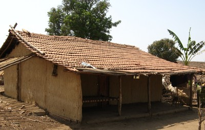

Bahareque [WWD]
Un pórtico de madera alrededor de un enrejado que consiste de ramas tejidas (ramas que se rellenan o recubren con barro), cañas, césped (hierba), o bambú. La tierra empleada es bastante arcillosa y mezclada con pajas u otras fibras de vegetal.

Construcción de bahareque, India (People in Centre)

Construcción de Bahareque, India (People in Centre)

Detalle de muro de bahareque (People in Centre)